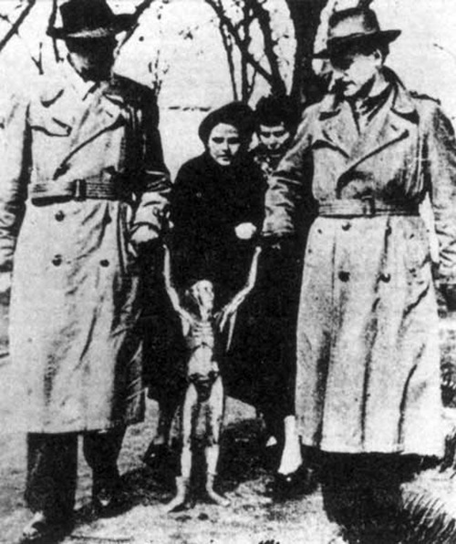

Photo controversée d'une créature récupérée du crash près de Mexico
A la base de Killeen, Camp Hood (Texas), des
gardes de la 2de Division Armée attendant le début d'un "flare firing", observent durant une heure 8 grands objets
luminescents aux couleurs verte, rouge et blanche voler le plus souvent de manière rectiligne Cas Blue Book n° 319 non expliqué.
Photographie controversée d'une créature humanoïde extraite d'un ovni écrasé près de Mexico. Cette créature aurait été emmenée en Allemagne pour y être étudiée. Sa
trace se perd quelque part entre le Mexique et l'Europe.
Un mémorandum du FBI indique que selon une source
confidentielle et digne de foi, les disques volants sont des fusées construites par des hommes, et qu'au cours
des 4 dernières années, l'URSS faisait des expériences pour mettre au point un type inconnu de disque volant.